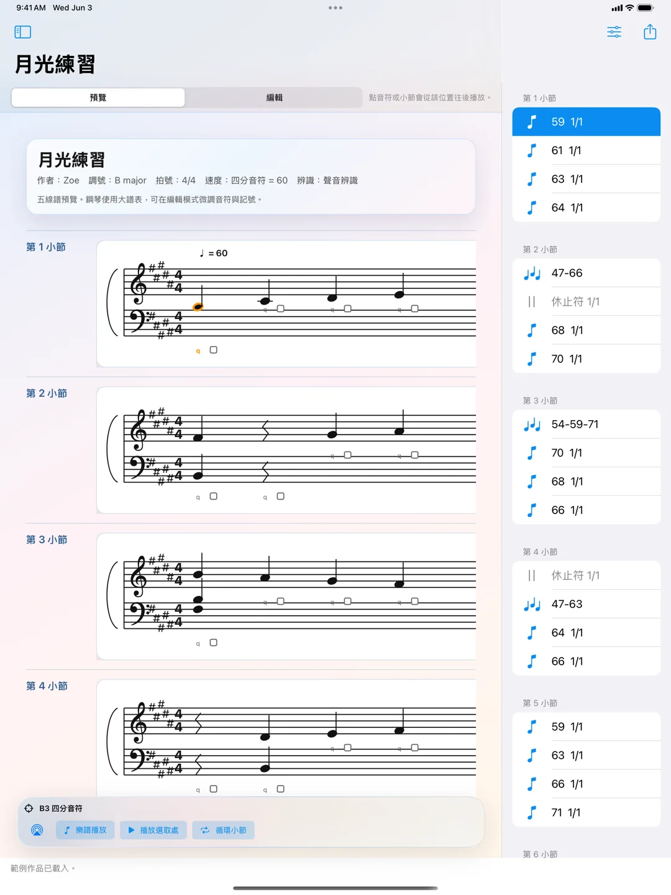
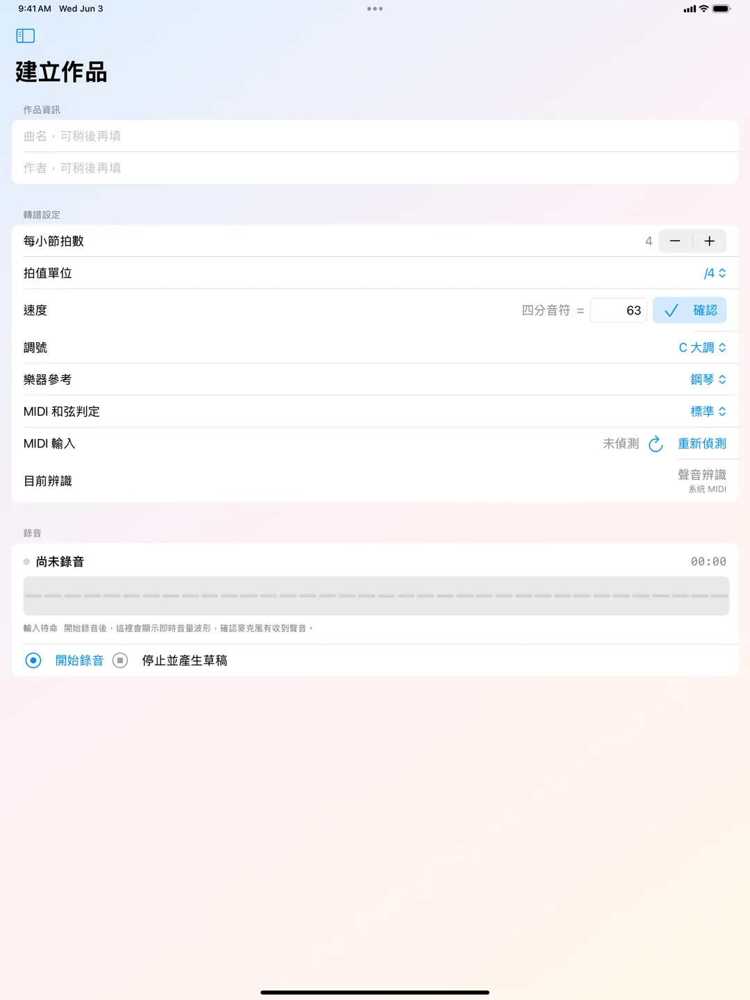
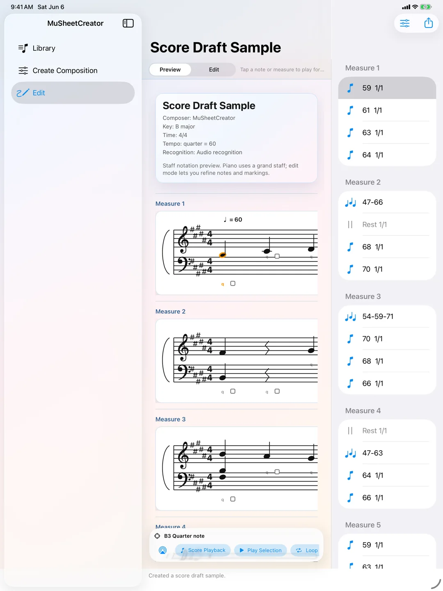
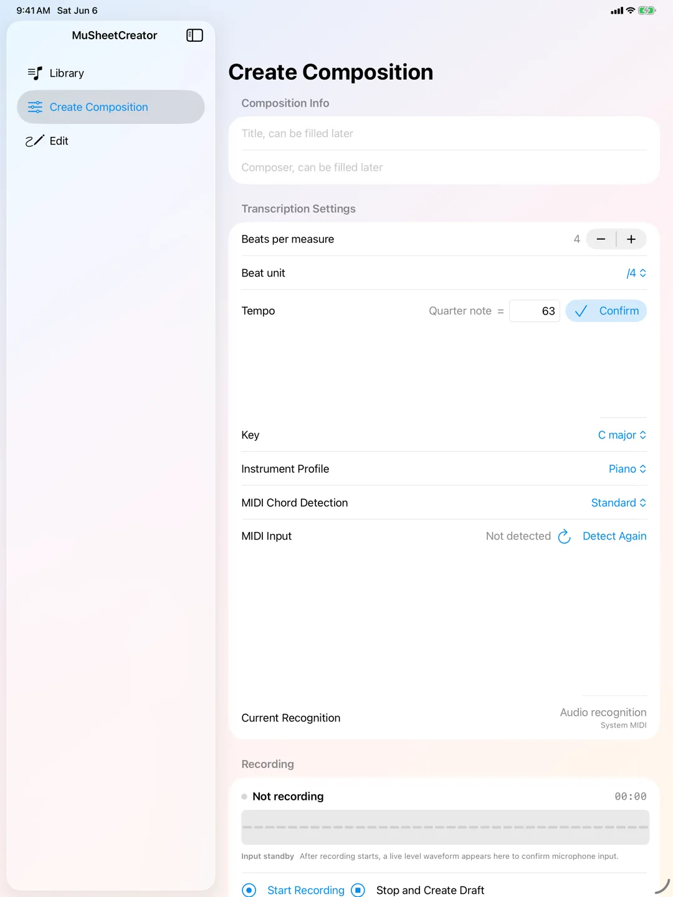

MuSheetCreator
MuSheetCreator 是一款為音樂創作者設計的樂譜草稿工具。當靈感出現時，你可以直接用樂器演奏，App 會保留原始錄音，並將演奏內容轉換成可編輯的五線譜草稿。
它特別適合正在學習音樂、喜歡即興創作，或常常「彈出旋律卻忘記怎麼重現」的使用者。先把聲音留下，再慢慢修正音高、節奏、和弦、休止符與樂譜記號。
- 可用裝置
- iPhone / iPad
- 下載方式
- 付費下載
{kind=link}

{kind=link}

從演奏開始，而不是從空白樂譜開始
創作者可以在錄音前設定拍號、速度與調號。錄音後進入預覽與編輯模式，從樂譜上的小節或音符回放對應的原始錄音片段，方便比對、修正與整理作品。
MIDI 與麥克風雙輸入
MuSheetCreator 支援麥克風聲音辨識，也支援 MIDI 輸入。當 MIDI 訊號可用時，App 會優先使用 MIDI 取得更準確的音高與時值；沒有 MIDI 時，則使用裝置麥克風進行聲音辨識。
可編輯的五線譜草稿
- 從錄音建立五線譜草稿
- 保留並回放原始錄音
- 支援 MIDI 輸入與麥克風聲音辨識
- 支援高音譜與低音譜的大譜表顯示
- 可編輯音符音高、時值、和弦音與休止符
- 可加入歌詞、指法、圓滑線、跳音、漸強、漸弱等常用記號
- 可從指定小節或音符位置開始播放
- 可輸出樂譜預覽與原始錄音檔
本機處理與隱私
MuSheetCreator 以本機處理為核心。錄音與樂譜資料會保存在使用者的裝置上，供使用者播放、編輯與匯出。App 不會將錄音上傳到伺服器，也不使用追蹤或廣告用途的第三方服務。
MuSheetCreator
MuSheetCreator is a score draft tool for music creators. When an idea appears, you can play it directly on your instrument, keep the original recording, and turn the performance into an editable staff notation draft.
It is especially useful for music learners, improvisers, and anyone who often plays a melody but later forgets how to recreate it. Capture the sound first, then refine pitch, rhythm, chords, rests, and notation marks later.
- Devices
- iPhone / iPad
- Download
- Paid download
{kind=link}

{kind=link}

Start from Playing, Not from a Blank Score
Before recording, creators can set time signature, tempo, and key. After recording, the preview and editing workflow lets users play back the original audio from a selected measure or note, making it easier to compare, correct, and shape the draft.
MIDI and Microphone Input
MuSheetCreator supports both microphone-based audio recognition and MIDI input. When MIDI is available, the app prioritizes MIDI for more accurate pitch and duration. Without MIDI, it uses the device microphone for sound recognition.
Editable Staff Notation Drafts
- Create staff notation drafts from recordings
- Preserve and replay the original audio
- Support MIDI input and microphone sound recognition
- Display grand staff notation with treble and bass clefs
- Edit note pitch, duration, chord tones, and rests
- Add lyrics, fingerings, slurs, staccato, crescendo, diminuendo, and common notation marks
- Start playback from a selected measure or note
- Export score previews and original audio files
Local Processing and Privacy
MuSheetCreator is designed around local processing. Recordings and score data are stored on the user's device for playback, editing, and export. The app does not upload recordings to developer-operated servers and does not use third-party services for tracking or advertising.